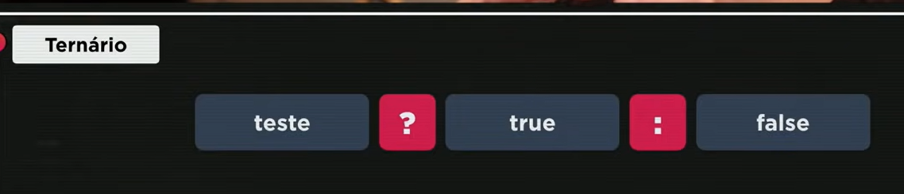
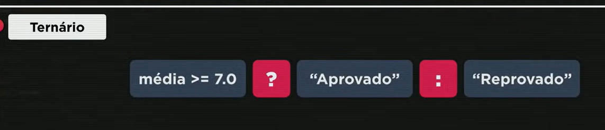
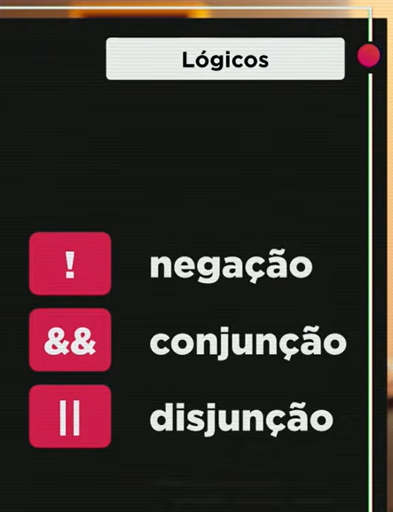
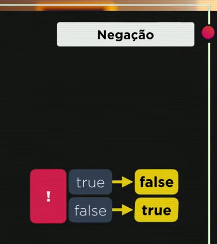
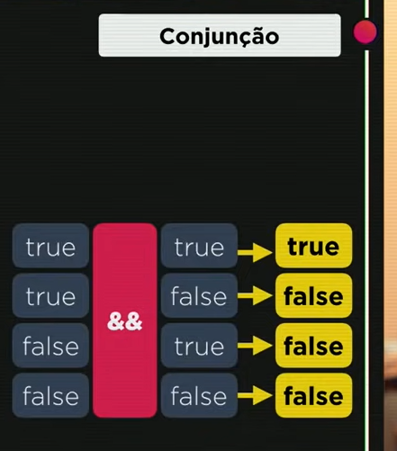
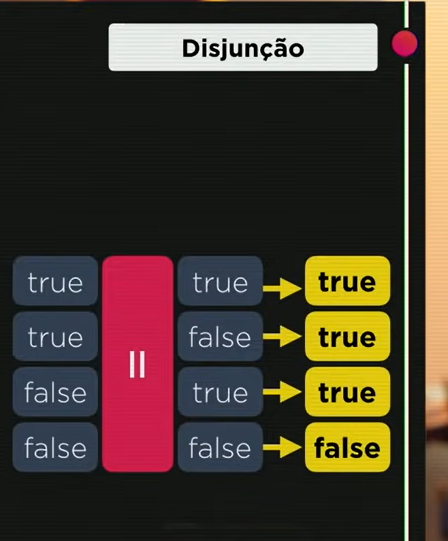

Operadores (Parte 2)
Alguns operadores que são os sequintes:
Operadores
- Aritméticos
- Atribuição
- Relacionais
- Lógicos
- Ternário
- > : Maior que
- < : Menor que
- >=: Maior ou Igual
- <=: Menor ou Igual
- ==: Igual
- != : Diferente
- === : Identico, exemplo: 10 == 10: true(veradeiro), 'marcelo' === 'Marcelo':false, 5 === '5':false(falso)
- !: Negação, quer dizer não
- &&: Conjução, seria o E logico exemplo, se x == a && c > a, a expressão é
- ||: Disjunção, Seria o OU, se a == b || a < b, resultador, se a expressão
- ?:
- ::  
Obs: Existem mais, porem no curso iremos ver sobre esses.
Nessa aula, iremos focar em dois, Relacionais, Lógicos e Ternário.
Operdadores Relacionais
Operadores Lógicos
   Ordem de precendecia dentro de uma conta
Vamo fazer uma conta com esses operadores, porem precisamos saber qual é a ordem de procencia, que seria por onde a conta começa
8 > 5 && 7 % 2 == 0
Quanto temos Operadores aritiméticos, relacionais e lógicos na mesma expressão, a order é a seguinte:
1° Fazemos a conta de todos operadores aritiméticos
2° Depois fazemos os operadores relacionais(seguinte a ordem de procencia deles)
3° Por ultimo fazemos os operadores lógicos
Obs: Caso não entenderm veja a aula que está abaixo, no Minuto 23:00
Ordem de precendecia só tendo operadores Lógicos
1° !
2°&&
3°||
Operador ternário
Em uma forma simples de explicar, é como se fosse aquele metodo das planilhas que mostra que se o valor for igual a x, vocês negativo
Exemplo: a Média para passar na escola é 6, o aluno tirou A tirou nota 5.6 e o aluno B tirou 8.5, Como fazemos uma conta no JS pra identificar quem passou?
Aluno A:
media >= NotaA ? 'aprovado : 'Reprovado'
Aluno A:Reprovado
Aluno B:
media >= NotaB ? 'aprovado : 'Reprovado'
Aluno A:Aprovado